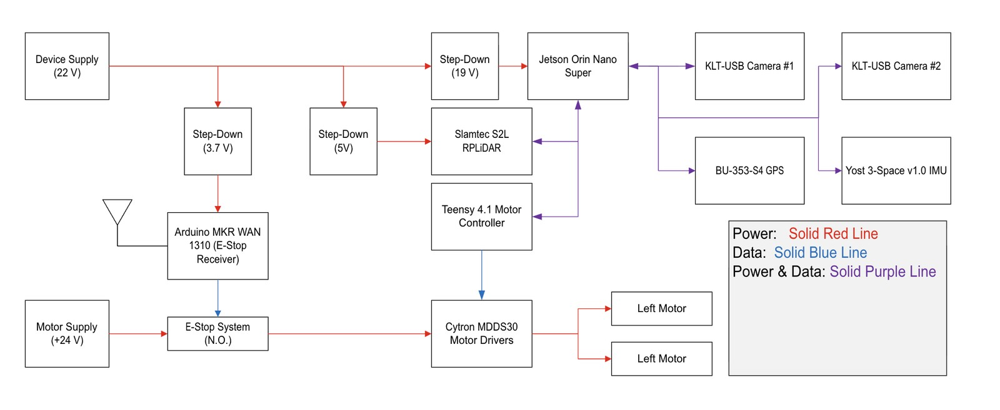

Option 1 / Case File
Pathfinding Autonomous Vehicle
Electrical architecture, power distribution, motor-driver wiring, e-stop control, MATLAB fault analysis, and system bring-up on an autonomous wheelchair-base robot.
Power Distribution
Motor Drivers
E-Stop
MATLAB / Simulink

01 / Engineering Thread
The electrical path from battery to motion.
The page follows the same order the work followed: define the system risk, build the electrical path, verify behavior, then show the documentation that made the robot supportable.
- NeedThe robot needed reliable power, motor control, and a stop path before autonomy mattered.
- BuildI integrated the battery feed, step-down rails, motor drivers, relay logic, and Teensy control path.
- VerifyMATLAB plots and bench checks were used to compare expected current, voltage, speed, and e-stop behavior.
- HandoffThe wiring maps and driver references explain exactly how someone else can debug or rebuild the system.
02 / Evidence In Order

